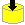

| |
| The LENO system is made to support the authoring of lecture notes, organized
in a number of chapters (or lectures). The top-level page refers to each lecture
in the material. Each lecture, in turn, refers to a number of pages. As an important characteristics of LENO, each page can be shown in at least three, and depending on the material, possibly four different views:
In slide view the primary information on a page is shown using a large font, hereby making it attractive to present the information from a browser via a projector in an auditorium. In the annotated slide view the primary information is shown with a number of annotations, which are associated with the individual constituents of a slide page. As in slide view, a single page is shown in isolation from all other pages, but links to the previous and the next page exists. An aggregated lecture view shows the primary slide information and the annotations of all pages in a lecture. Thus, in this view, the pages of a lecture are all aggregated into a single 'lecture page'. The information contents of this view is the same as the sum of the information of the all annotated slides in a single lecture. The thematic view typically shows most slide elements, including the annotations, with additional interleavning text. Typically, but not necessarily, a theme correspond to a section of slides. In the theme view of a material, elements such as programs, images, tables, and exercises are numbered hierarchically. Themes are not always present in a LENO-based material. The thematic view of the material may be available as PDF files via the 'printer icon'. It takes extra efforts by the autor to create a thematic view of the material. Use the yellow T icon to navigate to thematic expositions, if they are available. In addition, LENO supports generation of an automatically progressing slide show with the teacher's speaker sound. For this to work, the author needs to record the speaker sound and prepare the sequencing and timing of the individual pages in the show. An automatically progressing slide show with speaker sound is started from the lecture overview page, with one of the small speaker icons or from one of the textually anchored links just above the note page table. The slide show brings you through selected slide pages, programs, and image series. Notice that some of the slide pages my be visited more than once (such as before and after an external program page or image series - with different speaker sounds). The speaker sound can come from wav of mp3 files. If the material is located on a web server, the sound is streamed to your browser, and currently it relies on RealPlayer from http://www.real.com . For setup see for instance Aalborg University's video pages . The navigation icons used in LENO are presented in the table below: |
| Icon | Keyboard shortcut | Explanation |
 | u | Go up one strutural level towards the top-level page |
 | p | Go to the previous page. The icon is also used to navigate from one lectures to the previous lecture. |
 | n, CR | Go to the next page. The icon is also used to navigate from one lectures to the next lecture and other similar purposes.This navigation can also be activated by a double click on the background (Internet Explorer only). |
|  | no shortcut | Go to a download page, which allows access to a zip file with all the files making up the set set of lectures. |
 | no shortcut | Go to a page with an alphabetic index of the lecture notes covering all lectures. |
 | no shortcut | Go to this help page |
| no shortcut | Go to the page designated as the home page of these lecture notes. |
 | no shortcut | Go to particular page in the aggregated lecture view |
 | t | Go to the annotated slide view from the slide view. |
 | t | Go to the slide view from the annotated slide view. |
| no shortcut | Go to the readers comments on this page. Also allows you to post your own comments. This is a link to an annotation server which is external to LENO. | |
| no shortcut | As above - but there is at least one existing comment to this page. | |
 | no shortcut | If the current page is within a frame set, then break out from it. If not, nothing happens. |
| A number in the interval 1..9 | Go to a source program | |
| A number in the interval 1..9 | Go to an exercise | |
| A number in the interval 1..9 | Go to an image series | |
| no shortcut | Go to an elucidator, which explains a program | |
| no shortcut | Go to a sidetrack, which is supposed to explain some special topic of the material. The side track is presented in a frameset of its own, which at any time allows you to go back on the main track very easily. | |
 | x | Symbolizes an automatic slide show, possibly with speaker sound. By clicking the symbol the automatic slide show stops. |
 | x | Symbolizes a stopped slide show. By clicking this symbol the automatic slide with possible speaker sound show starts. |
| n | Go to the next page in an automatically progressing slide show (with speaker sound). Accross a number of pages, these arrow symbols trace the 'dynamic chain' of a slide show as opposed to the yellow arrow symbols that navigate the static page structures. | |
 | y | Plays the speaker sound of a single slide page. You can navigate freely while listening to the speaker sound. If you start a new speaker sound, the already playing sound stops. If, however, you start an automatically progressing slide show with speaker sound, you will experience 'double sound' |
| no shortcut | A symbol shown in a lecture index which links to a particular place in an automatic slide show. | |
 | r | Go to the table of contents of a trail |
 | q | Go to the previous slides in a trail |
 | no shortcut | Go to the current slide in a trail |
| w | Go to the next slide in a trail | |
 | no shortcut | Go back on the main track from a sidetrack |
 | v | Go to the corresponding Thematic description - a more comprehensive coverage of the material typically |
 | no shortcut | Go to the Lecture overview from a theme overview |
| no shortcut | Go to a page which gives access to PDF files |
| The four red icons are used in the LENO trail facility. Using a LENO trail it is
possible to define a sequence of slides from selected slides in a number of sections. The
trail determines the selection and the sequence of the slides. This is useful if you want to present
a subset of your slides for some purpose, and if you do not want to deal with multiple copies (which is usually a bad solution).
The LENO trail facilities is realized via use of HTML frames. The red icons from above
are all shown in a frame of its own (in the leftmost margin), the trail navigation frame. Notice that
you can navigate freely in the slide trail while maintaining the context of the trail. The keyboard shortcuts work in Internet Explorer 4, 5, 6 (from Microsoft), and in Mozilla and Netscape 6. The collection of HTML WWW pages, which constitute a set of lecture notes, are generated from an XML-in-LAML source file, written in the programming language Scheme. Scheme is a language in the Lisp family of languages. The LENO surface syntax is generated from an XML Document Type Definition (DTD), and as such LENO is tightly connected to XML. The LENO Reference Manual describes the elements and attributes of the LENO XML language. The underlying system, called LAML (Lisp Abstracted Markup Language) is described in further detail in the LAML home page . If you consider to make a LENO material yourself we will recommend that you start reading the LENO tutorial , which is part of the LAML Tutorial . Kurt Nørmark |